Be'luna quest
Also known as Craak slayer set quest
Recommended level: solo 900, duo 700
Requirements:
By this time you should already know where edron boss run is. This quest requires some time to make it if you are under level 1000, you can manage it but it will take alot of time. There is a checkpoint at the questing area so you can either grab it first or take it when you walk by it. Some coffins are hidden under bushes so keep your eyes open.
Here you need to collect 16 coffins in order to get through the door. Also you need to pull 3 levers and kill 3 bosses.
Let’s start this quest from edron boss run 1 checkpoint. Go South and go into the teleport with bunch of jungle grows.

Best way to do this is first pull all the levers, collect coffins along the way and kill the bosses at last. Let’s start at the main floor. Start from North-East 1st coffin, go from there a little bit down and ladders up. There’s a 2nd coffin to the South-west corner there.
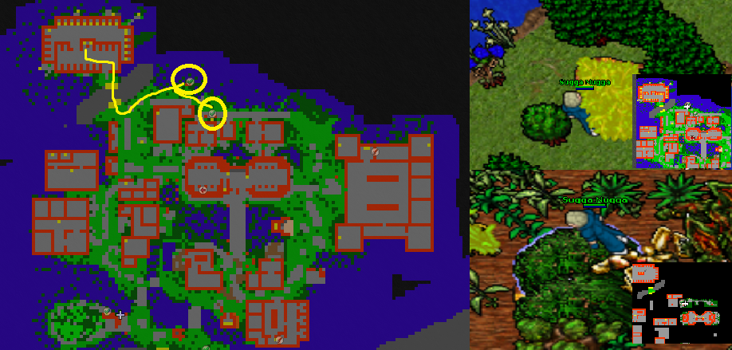
Continue East side and go South house with dark wizards and levers. Go upstairs and North-East corner has the first lever you need to pull. Then back a little bit and go inside the mansion to the East as now the rock is out of the way. There’s 3rd coffin.
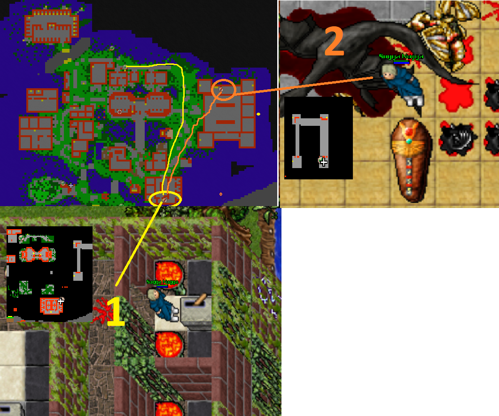
Now head to the middle area inside the house with lots of ents, angel of deaths, gryphons and other monsters. Pull the lever and continue your journey to the South.
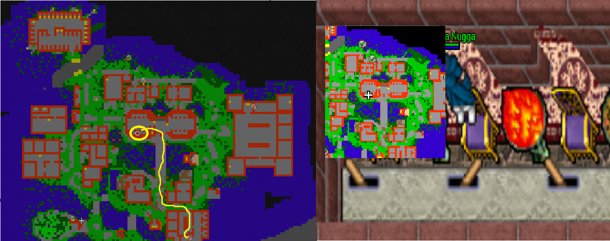
As you go South you’ll find 4th coffin on your way to the stairs behind the trees and bushes. Grab it and go upstairs by the cyclips and xarptors. Go upstairs again and go full East for the last lever.
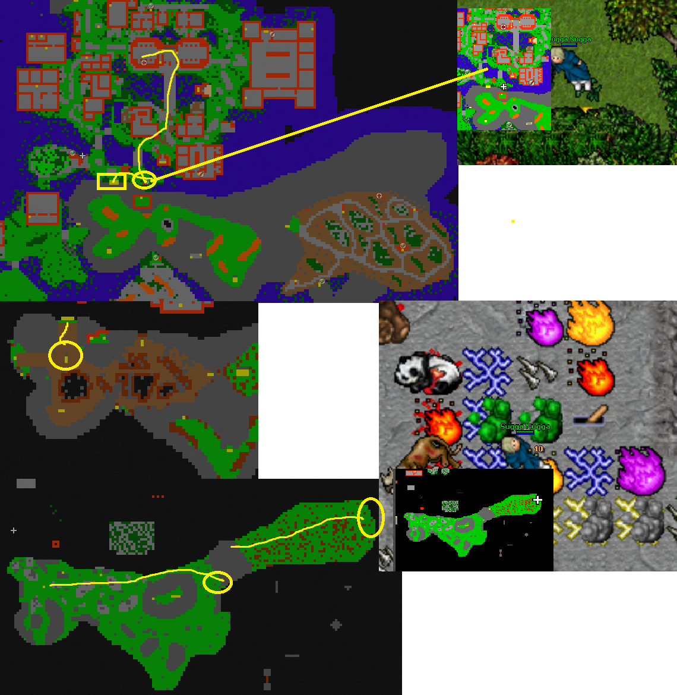
Now you are able to go kill the Hydrocon boss. Before that, grab a coffin at that same area. The coffin is to the East at wastelands with ladders going up to 2 adonis yetiroths and andromeda draconis. Kill those and grab the 5th coffin.
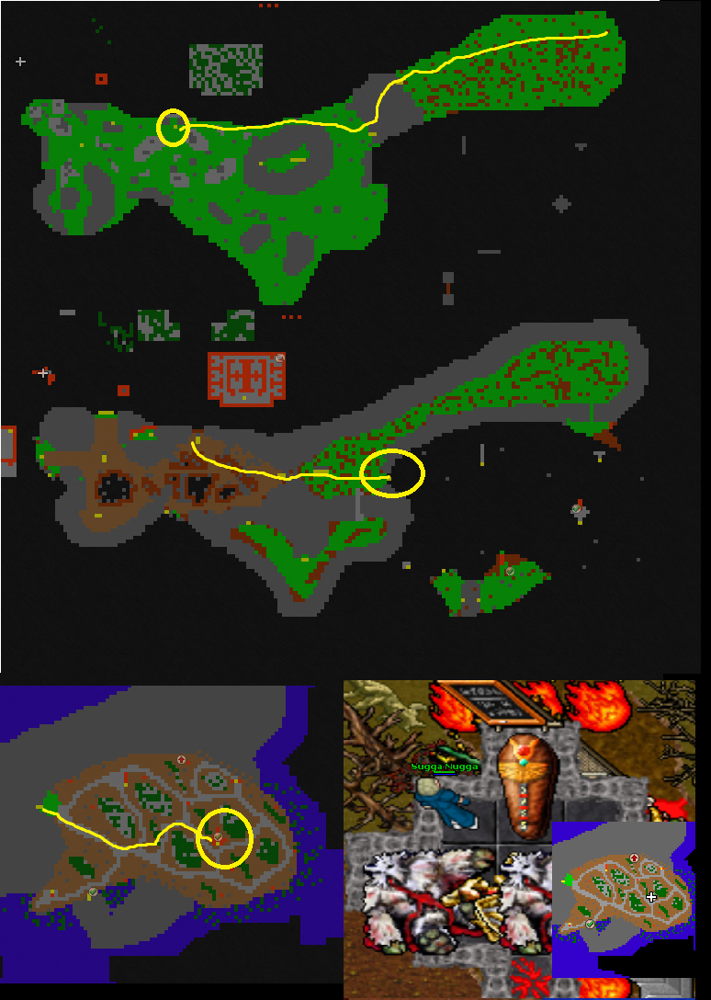
Then go South and stairs up from there and hop into the teleport. There's a 6th coffin and Hydrocon boss II.
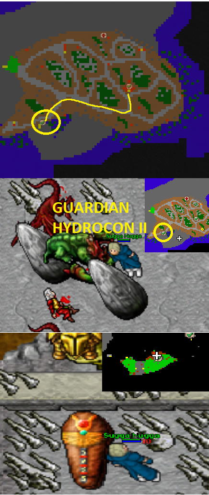
Now go back to the West stairs and go South past the narrow path. There’s Dipthrahs and you need use great fireballs to take them down or shoot with the weapon you are using. Go past them to the West stairs and follow the narrow road to the upstairs. There's a 7th coffin.
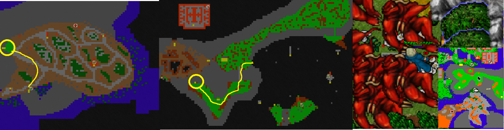
Now follow the road to the West and go down into a hole. There’s few places you need to use rope/exani tera to grab some coffins. At the end you should have 13 coffins before going back up if you have followed to this point. There’s also Deserticus Draconis II that you need to kill at the final hole.
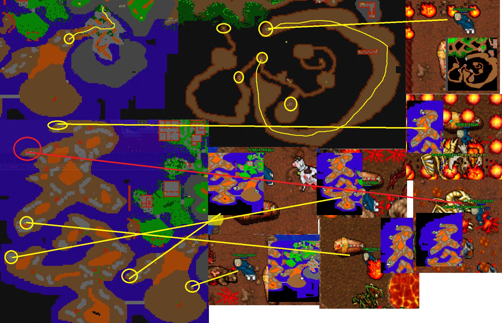Now let’s head back to surface. Go back a little bit and rope yourself up before the place you came down. You find yourself at garden like area with strange easy monsters. Go past them to the North-East stairs and go North stairs down. Then head West and go downstairs by the Xapter.

Now you’re at the last place with Pandarius II and 3 remaining coffins. Start with the panda boss to the West corner & 14th coffin. Go from there to the North and grab the 15th coffin and then head to the end from behind the place you started. There’s the 16th coffin.
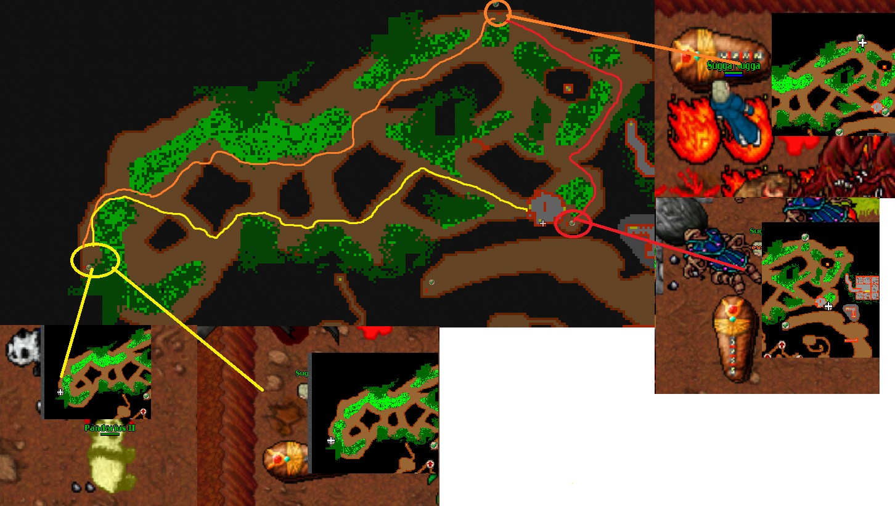
And now you can continue your journey, it has just begun. Go back to the main floor and head East. There’s an experience door and stairs down.
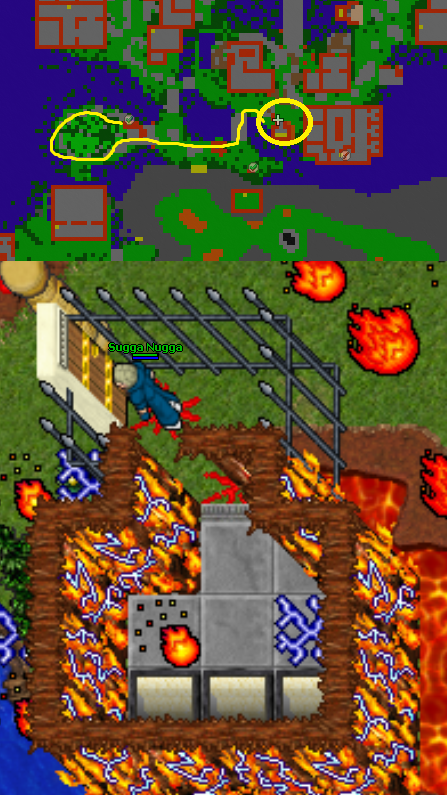
Go past the black sheeps and other animals to get to the teleport at South with 2 trapped xapters. Behind the teleport awaits Durrion II that will reset all the bosses that was just killed. So if you are with a team you better wait for them.
At the underground place, you need to pull 9 levers in order to continue. Start from the West side and then continue to the East. There’s 3 levers before the first teleport. After 1st teleport there’s 2 levers, then the rest are at the last place across the place. At last go to the teleport (Blue circle).
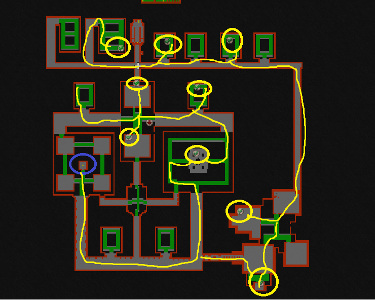
Go past the garden area you just were teleported to. Next will be some longer labyrinth place you need to get through. Go East stairs up with no way back down. Follow the road as far as you come to the top of the labyrinth. There’s 2 stones on your way, levers and up and down protected by arm of doom and helarctos malayanus. Pull them and keep going forward.
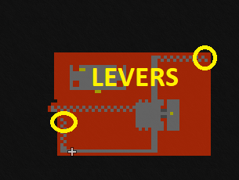
Now you are getting close to the end! Just last spurt down and then kill 3 bosses, Guardian Overlord II, Elfenix II and Wizard Elroy II to get through the stone to the quest area. You need to face some Wizards of Gamma, Cyclip god, surphyres and craak yetiroths.
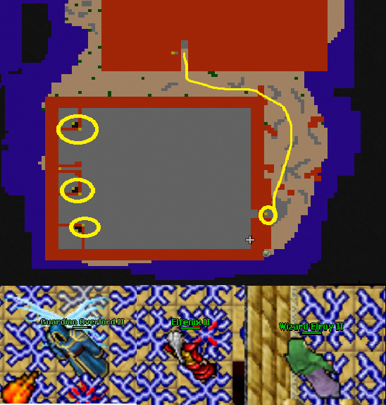
And finally you are at the end of the quest. Just kill that Morguthian II boss to get past, again wait for your companions to get past the teleport before killing the boss!